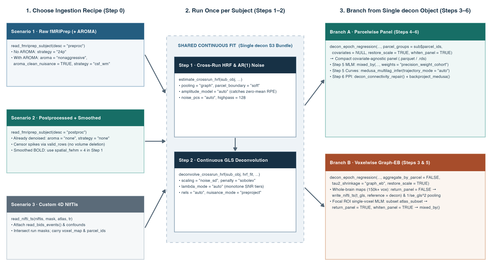
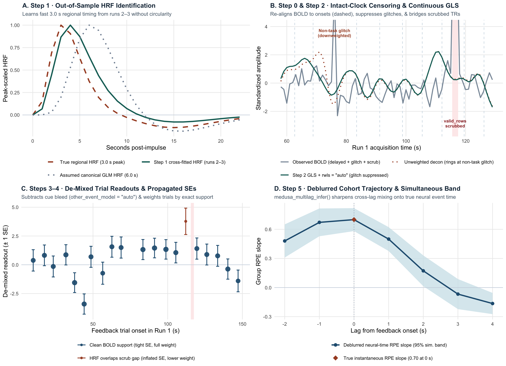

library(medusa)
# --- Scenario 1A: Standard fMRIPrep (no ICA-AROMA) ---
sub_obj <- read_fmriprep_subject(
fmriprep_dir = "/path/to/derivatives/fmriprep",
bids_dir = "/path/to/bids",
sub = "01",
task = "learn",
space = "MNI152NLin2009cAsym",
mask = "auto",
mask_mode = "intersection", # identical voxel set across all runs
atlas = "/path/to/Schaefer2018_200Parcels_2mm.nii.gz",
aroma = "none",
strategy = "24p", # 6 motion + derivatives + quadratics
fd_threshold = 0.5, # or 0.3 + motion_bandstop_bpm = c(12, 20) if TR <= 1s
include_non_steady_state = TRUE # masks dummy scans in valid_rows on intact clock
)
# --- Scenario 1B: fMRIPrep + fMRIPost-AROMA (or legacy fMRIPrep AROMA) ---
sub_obj <- read_fmriprep_subject(
fmriprep_dir = "/path/to/derivatives/fmriprep",
bids_dir = "/path/to/bids",
aroma_dir = "/path/to/derivatives/fmripost-aroma", # auto-detected if sibling
sub = "01",
task = "learn",
space = "MNI152NLin6Asym",
mask_mode = "intersection",
atlas = "/path/to/Schaefer2018_200Parcels_mni6_2mm.nii.gz",
aroma = "nonaggressive", # Pruim et al. (2015) partial regression
aroma_clean_nuisance = TRUE, # Lindquist et al. (2019) matched confound cleaning
strategy = "csf_wm", # avoid redundant 24p motion expansion after AROMA
fd_threshold = 0.5,
include_non_steady_state = TRUE
)
# Always inspect per-run censoring and event counts before Step 1:
print(sub_obj$confounds$summary[, c("run", "n_volumes", "pct_censored", "mean_fd")])
table(sub_obj$events$run, sub_obj$events$condition)Quickstart: Empirical Setup & Core Workflows
Copy-pasteable pipelines, optimal settings, and visual intuition for common fMRI scenarios
If you already have preprocessed or postprocessed 4D fMRI runs and BIDS event schedules on disk, this chapter shows how to go from your files to analysis-ready parcelwise panels and voxelwise brain maps using MEDuSA’s best-performing settings—and explains visually what each step is doing under the hood.
TipCore Efficiency Principle: Run Steps 0–2 Once, Branch in Steps 3–6
You do not need separate deconvolution pipelines for parcelwise and voxelwise analyses. Ingest your participant’s runs once with both a brain/ribbon mask and an anatomical atlas (Step 0), fit geodesic cross-run HRFs and \(\text{AR}(1)\) noise (Step 1), and run continuous GLS deconvolution (Step 2) to produce a single decon bundle. From that one decon object, Steps 3–4 branch cleanly into both a compact parcelwise trial panel and voxelwise Graph-EB maps.

decon object into a covariate-agnostic parcelwise panel (mixed_by(), medusa_multilag_infer(), decon_connectivity_repair()) and/or voxelwise Graph-EB maps (write_nifti_ts()).
Which Scenario Matches Your Data?
| Starting derivative stream | Jump to recipe | Key Step 0 setting |
|---|---|---|
Standard fMRIPrep (*_desc-preproc_bold.nii.gz) without AROMA |
Scenario 1A | aroma = "none", strategy = "24p", fd_threshold = 0.5 |
fMRIPrep + fMRIPost-AROMA (un-denoised BOLD + MELODIC sidecars) |
Scenario 1B | aroma = "nonaggressive", aroma_clean_nuisance = TRUE, strategy = "csf_wm" |
Postprocessed streams (BrainGnomes, XCP-D, custom AROMA + smoothing) |
Scenario 2 | desc = "postproc", aroma = "none", strategy = "none", spatial_fwhm = 4 |
| Custom 4D NIfTIs + event TSV/CSV tables | Scenario 3 | read_nifti_ts(..., mask, atlas) + read_bids_events() |
Visual Intuition: What Each Step Does to Your Signal
Before copying a template, Figure 1.2 traces a simulated participant through all six stages on a rapid multi-phase decision task (cue \(\to\) jittered reaction time \(\to\) feedback with signed reward prediction error rpe, a fast 3.00 s regional HRF, an uncensored scanner glitch at \(95\text{ s}\), and a \(4\text{-TR}\) motion-scrubbed burst at \(125\text{--}128\text{ s}\)).

assets/quickstart-figures.R). (A) Step 1: Leave-one-run-out cross-fitting recovers the region’s fast 3.0 s HRF peak from runs 2–3 rather than assuming a sluggish 6.0 s canonical template. (B) Steps 0 & 2: Flagging high-motion frames in valid_rows preserves exact event timestamps while deconvolve_crossrun_hrf(..., rwls = "auto") shifts delayed BOLD peaks back to feedback onsets (dashed lines), suppresses inverse ringing around an unmasked glitch at 95 s, and bridges smoothly across scrubbed frames. (C) Steps 3–4: Joint (T, O) de-mixing removes preceding cue bleed and assigns wider analytical se_demixed bars (and lower precision_weight) to trials whose causal HRF tail falls partially inside the scrub gap. (D) Step 5: medusa_multilag_infer() sharpens cross-lag deconvolution smoothing onto true neural event time (0 s) with simultaneous 95% Max-|T| confidence bands.
- Keep event time (Step 0). A scrubbed frame still occupies one TR on the clock. Mark it in
valid_rowsand keep events such as missed-response cues in the schedule if they evoked BOLD. - Learn regional timing (Step 1, panel A). Other runs provide the HRF for the target run. A signed prediction error can evoke strong responses that average to zero, so
amplitude_model = "auto"also looks for trial-varying activity. Background time courses that pass the noise-PC screen can enter the nuisance model. Noise-PC demonstration - Reconstruct continuous activity (Step 2, panel B). The inverse uses the selected HRF and serial noise model. Smoothing controls how much rapid variation the data can support. Estimates inside a scrubbed interval depend on neighboring frames and the penalty.
- Measure each feedback response (Steps 3–4, panel C). Estimate and subtract spillover from preceding cues, then correct mixing among feedback trials. Each parcel gets an amplitude (
decon_demixed) and measurement uncertainty (se_demixed). A connectivity analysis also needs the estimated covariance of the errors in two parcels. POET demonstration - Test the planned effect. Use Step 5 for a behavioral predictor of neural activity (panel D gives a lag-zero estimate of 0.70 for a generating slope of 0.70). Use Step 6 for a neural predictor of another parcel. In the latter case,
decon_connectivity_repair()accounts for both seed noise and shared seed–target noise.
Step 0 Ingestion Recipes for Common Scenarios
Scenario 1: Standard fMRIPrep Derivatives (with or without fMRIPost-AROMA)
Use read_fmriprep_subject() to discover *_desc-preproc_bold.nii.gz, per-run brain masks, confounds TSVs, and BIDS *_events.tsv files automatically.
Scenario 2: Postprocessed Streams (Already AROMA-Denoised & Spatially Smoothed)
Many labs run postprocessing pipelines (such as BrainGnomes or XCP-D) after fMRIPrep to apply ICA-AROMA, tissue/motion regression, high-pass filtering, and spatial smoothing. Three rules keep MEDuSA optimal on postprocessed NIfTIs:
- Do not re-regress raw
fMRIPrepconfounds (strategy = "none"): Regressing un-denoised24porcsf_wmcolumns onto AROMA-cleaned BOLD projects removed motion artifacts right back into your data (Lindquist et al., 2019). IfBrainGnomesJSON sidecars are present,read_fmriprep_subject(..., desc = "postproc")detectsconfound_regressionandapply_aromaautomatically (and halts ifscrub_timepointsdeleted volumes). - Unsmoothed vs. spatially smoothed NIfTIs: If you still have an unsmoothed postprocessed stream, prefer it (
spatial_fwhm = 6in Step 1 pools along cortical geodesics without cross-sulcal blurring). When working from already-smoothed NIfTIs, reduce Step 1’sspatial_fwhmto4mm; Step 2’snoise_innovationswill automatically capture smoothing-induced inter-voxel correlations so Step 4 parcel standard errors are never understated. - Use
scaling = "noise_sd"(never"psc"on demeaned BOLD): Postprocessed images often have zero-mean or residualized baselines.scaling = "noise_sd"scales each voxel by its task-free GLS innovation SD on unmasked frames, andrestore_scale = TRUEin Steps 3–4 returns trial readouts to physical postprocessed BOLD units.
sub_obj <- read_fmriprep_subject(
fmriprep_dir = "/path/to/derivatives/postproc",
bids_dir = "/path/to/bids",
sub = "01",
task = "learn",
space = "MNI152NLin2009cAsym",
desc = "postproc", # match your postprocessed desc-* entity
mask = "auto",
mask_mode = "intersection",
atlas = "/path/to/Schaefer2018_200Parcels_2mm.nii.gz",
aroma = "none", # already applied upstream
strategy = "none", # confounds already regressed upstream
censor = "auto", # discovers *_censor.1D if present, else fd_threshold
fd_threshold = 0.5,
include_non_steady_state = TRUE
)Scenario 3: Custom 4D NIfTIs + Event Tables
When working outside a BIDS directory layout, assemble the exact same "medusa_nifti_ts" bundle directly:
sub_obj <- read_nifti_ts(
niftis = c(run1 = "sub01_run1_bold.nii.gz", run2 = "sub01_run2_bold.nii.gz"),
mask = "sub01_ribbon_mask.nii.gz",
atlas = "Schaefer2018_200Parcels_2mm.nii.gz",
tr = 1.0
)
sub_obj$events <- read_bids_events(
events = c(run1 = "sub01_run1_events.tsv", run2 = "sub01_run2_events.tsv"),
bold = sub_obj
)
# Optional censoring / confounds from fMRIPrep TSVs or 1D censor vectors:
conf <- read_fmriprep_confounds(
confounds = c(run1 = "run1_confounds.tsv", run2 = "run2_confounds.tsv"),
bold = sub_obj, strategy = "none", fd_threshold = 0.5
)
sub_obj$nuisance <- conf$nuisance
sub_obj$valid_rows <- conf$valid_rows
sub_obj$confounds <- confShared Participant Deconvolution Spine (Steps 1 & 2)
Regardless of how sub_obj was ingested in Step 0, run Steps 1 and 2 once per participant:
# Step 1: Out-of-sample cortical-graph HRF & 2-pass REML AR(1) noise
hrf_fit <- estimate_crossrun_hrf(
bold = sub_obj,
kernel_grid = hrf_library(tr = sub_obj$tr, preset = "medusa"),
pooling = "graph", # geodesic in-mask pooling; preserves intra-parcel strata
spatial_fwhm = 6, # use 4 if BOLD was already spatially smoothed upstream
parcel_boundary = "soft", # respects atlas borders unless neighbor profiles agree
noise_model = "ar1",
evidence = "calibrated",
amplitude_model = "auto", # SVD fracridge captures zero-mean modulated regions
selection_mode = "soft_average",
noise_pcs = "auto", # selects K* = 0 if already clean, else removes residual physio PCs
highpass = 128 # idempotent < 1/128 Hz DCT drift projection on valid_rows
)
# Step 2: Event-informed continuous GLS deconvolution
decon <- deconvolve_crossrun_hrf(
bold = sub_obj,
hrf_fit = hrf_fit,
lambda = NULL,
lambda_mode = "auto", # monotone SNR-stratified GCV smoothing across cortex
scaling = "noise_sd", # task-free GLS innovation SD (safe on demeaned BOLD)
penalty = "sobolev", # penalizes both curvature and slow baseline ramps
rwls = "auto", # Woodbury SBL downweighting of sub-threshold glitches
nuisance_mode = "preproject",
noise_pcs = "auto",
observation_mask = "fit",
tail_padding = 0L
)Branching into Parcelwise & Voxelwise Variants (Steps 3 & 4)
Branch A: Covariate-Agnostic Parcelwise Panel (Recommended Default for Cohort Modeling)
Passing covariates = NULL and parcel_groups = sub_obj$parcel_ids produces a compact, analysis-ready parcel panel (a few MB per participant; save as .parquet or .rds). You can later merge any behavioral, reinforcement-learning, or drift-diffusion model variables onto (id, run, event_index) without ever re-running Steps 1–4:
ep_parcel <- decon_epoch_regression(
deconvolution = decon,
covariates = NULL, # covariate-agnostic panel ready for any model
events = sub_obj$events,
target_condition = "feedback", # repeat per task phase of interest (e.g., "cue")
lags = seq(-2, 6, by = 1), # peri-event window in seconds
source_model = "impulse", # use "duration" + trial_durations for variable RTs
duration_scale = "rate",
demix_other_events = TRUE,
other_event_model = "auto", # joint (T, O) trial subtraction when phases overlap
demix_target_trials = TRUE,
demix_within_trial = FALSE, # keep FALSE when feeding medusa_multilag_infer()
demix_ridge = "auto", # SURE-tuned trial ridge
restore_scale = TRUE,
tau2_shrinkage = "auto", # set "graph_eb" explicitly for dense >= 400-parcel atlases
parcel_groups = sub_obj$parcel_ids,
variance_confounds = sub_obj, # carries FD/DVARS envelopes for Step 6 connectivity POET
whiten_panel = TRUE, # exports ZCA-decorrelated *_whitened columns
return_panel = TRUE
)
# Tag participant ID and join external computational covariates safely on (id, run, event_index)
panel_sub <- data.table::as.data.table(ep_parcel$panel)
panel_sub[, id := "sub-01"]
# arrow::write_parquet(panel_sub, "panels/sub-01_feedback_parcel_panel.parquet")Branch B: Voxelwise Graph-EB Maps & Focal ROI Panels
At whole-brain 2 mm resolution (~150,000 voxels \(\times\) trials \(\times\) lags), materializing a full trial-by-voxel panel for every subject would require tens of gigabytes. Instead, match return_panel to your spatial scope:
# 1. Whole-brain voxelwise 1st-level GLS maps (memory-light: return_panel = FALSE)
ep_vox <- decon_epoch_regression(
deconvolution = decon,
covariates = subj_covariates, # list(run1 = data.frame(rpe = ...), ...)
events = sub_obj$events,
target_condition = "feedback",
lags = seq(-1, 4, by = 1),
source_model = "impulse",
other_event_model = "auto",
demix_ridge = "auto",
restore_scale = TRUE,
tau2_shrinkage = "graph_eb", # bilateral cortical-sheet EB variance + hotspot guard
aggregate_by_parcel = FALSE,
return_panel = FALSE # returns compact per-voxel (beta_gls, se_gls, t_gls)
)
# Stream 3D lag-0 t-statistic or beta NIfTIs directly using decon's carried geometry:
lag0 <- subset(ep_vox$coefficients, lag == 0 & term == "rpe")
write_nifti_ts(
stats::setNames(lag0$t_gls, lag0$voxel),
"maps/sub-01_feedback_rpe_lag0_t.nii.gz",
reference = decon
)
# 2. Focal single-voxel trial panels (for random-slopes mixed_by() inside targeted ROIs)
# Restrict Step 0/3 to target atlas parcels (a few thousand voxels) and set:
# tau2_shrinkage = "graph_eb", whiten_panel = TRUE, return_panel = TRUECohort Inference Templates (Steps 5 & 6)
Collect the Branch A epoch objects in subject_epochs, a list named by participant ID. Suppose trial_behavior contains one row per feedback event with id, run, event_index and rpe. The event index is its row in the full run event table, before selecting feedback. Center RPE once on those behavioral rows so the same event has the same predictor in every parcel and lag. Step 0 join example
library(data.table)
behavior <- copy(as.data.table(trial_behavior))
stopifnot(!anyDuplicated(behavior, by = c("id", "run", "event_index")))
behavior[, rpe_within := rpe - mean(rpe, na.rm = TRUE), by = .(id, run)]
for (sid in names(subject_epochs)) {
panel <- copy(as.data.table(subject_epochs[[sid]]$panel))
panel[, id := sid]
stopifnot(nrow(panel[!behavior, on = .(id, run, event_index)]) == 0L)
panel[behavior, on = .(id, run, event_index),
`:=`(rpe = i.rpe, rpe_within = i.rpe_within)]
subject_epochs[[sid]]$panel <- panel
}
group_panel <- rbindlist(lapply(subject_epochs, `[[`, "panel"))
# Step 5A: Fit the planned multilevel model
fit_mlm <- mixed_by(
data = group_panel,
outcomes = "decon_demixed", # NEVER use decon_eb as a group outcome
rhs_model_formulae = ~ rpe_within + (1 + rpe_within || id) + (1 | id:run),
split_on = c("parcel", "evt_time"),
weights = "precision_weight_cohort",
reweight_conditional_tau2 = "auto", # upgrades marginal panel weights to residual tau2
padjust_by = "term",
padjust_method = "BY"
)
# Map group parcel statistics back onto a 3D NIfTI volume for ggbrain visualization:
backproject_medusa(
coef_df = subset(fit_mlm$coef_df_reml, term == "rpe_within" & evt_time == 0),
brain_mask = decon,
plot_cols = c("estimate", "statistic"),
output_dir = "group_maps"
)
# --- Step 5B: Continuous multi-lag trajectory, simultaneous bands, & window contrasts ---
fit_traj <- medusa_multilag_infer(
subject_epochs,
covariates = "rpe",
trajectory_mode = "auto", # spectral deblurring + P-spline across lags
contrast_source = "unsmoothed", # unbiased deblurred curve for window integrals
contrasts = list(late_minus_early = list(early = c(0, 1), late = c(2, 4))),
use_whitened = FALSE,
tr = sub_obj$tr,
n_perm = 4000L
)
# --- Step 6: Disattenuated trial-by-trial seed-target connectivity / PPI (M-MOMS) ---
fit_ppi <- decon_connectivity_repair(
panel_dt = subject_epochs,
seed_region = "Parcel_Seed",
target_region = "Parcel_Target",
seed_lag = 0,
target_lag = 0,
covariates = "rpe",
test_ppi = TRUE, # tests Seed + RPE + Seed:RPE PPI interaction
multilag_control = TRUE, # partials adjacent-lag spillover when multiple lags exist
region_col = "parcel"
)Optimal Settings Cheat Sheet & Top 5 Pitfalls
| Stage | Parameter | Recommended Setting | Why It Matters |
|---|---|---|---|
| Step 0 (Step 0 Guide) | aroma, strategy |
"none", "24p" (raw); "nonaggressive", "csf_wm" (+AROMA); "none", "none" (postproc) |
Prevents motion re-injection on AROMA-cleaned BOLD (Lindquist et al., 2019). |
| Step 0 | censor, include_non_steady_state |
"auto" (fd_threshold = 0.5), TRUE |
Masks spikes/dummy TRs in valid_rows without shifting event timestamps. |
| Step 1 (Step 1 Guide) | pooling, spatial_fwhm, parcel_boundary |
"graph", 6 (unsmoothed) / 4 (smoothed), "soft" |
Geodesic gray-matter pooling without cross-sulcal bleed; retains rim/core strata. |
| Step 1 | amplitude_model, selection_mode, noise_pcs |
"auto", "soft_average", "auto" |
Identifies HRFs in zero-mean modulated regions and screens global physio PCs. |
| Step 2 (Step 2 Guide) | scaling, penalty, lambda_mode, rwls |
"noise_sd", "sobolev", "auto", "auto" |
Safe on demeaned BOLD; monotone SNR-stratified GCV + SBL glitch protection. |
| Steps 3–4 (Step 3, Step 4) | restore_scale, other_event_model, demix_ridge |
TRUE, "auto", "auto" |
Physical BOLD units across runs/subjects + (T, O) de-mixing + SURE ridge. |
| Steps 3–4 | tau2_shrinkage |
"graph_eb" (voxelwise) / "auto" (parcelwise) |
Prevents single-voxel \(\widehat{\tau}_{\text{bio}}^2 = 0\) collapse while protecting focal hotspots. |
| Step 5 (Step 5 Guide) | outcomes, weights, reweight_conditional_tau2 |
"decon_demixed", "precision_weight_cohort", "auto" |
Calibrated random-slopes inference with conditional residual variance weights. |
WarningFive Common Pitfalls to Avoid
- Never delete scrubbed or dummy volumes from 4D NIfTIs before MEDuSA: Always keep all \(T_r\) volumes and pass censoring via
valid_rows(censor/fd_threshold). - Never use
decon_ebas the outcome inmixed_by()ordecon_connectivity_repair():decon_ebis Empirical-Bayes shrunk for single-trial visualization/plotting; using it in group regressions double-shrinks slopes toward zero. Always modeldecon_demixed. - Never pass un-projected
fMRIPrepconfounds alongside AROMA-cleaned BOLD: Usestrategy = "none"if confounds were already regressed upstream, oraroma_clean_nuisance = TRUEwithstrategy = "csf_wm"when applying AROMA inside Step 0. - Never use
scaling = "psc"on demeaned or residualized postprocessed BOLD: Near-zero voxel baselines blow up percent-signal-change denominators; usescaling = "noise_sd"withrestore_scale = TRUE. - Keep
demix_within_trial = FALSEin Step 3 when feedingmedusa_multilag_infer(): Step 5’strajectory_mode = "deblur_pspline"already performs spectral cross-lag deblurring at the cohort level using the exact cross-lag operator.